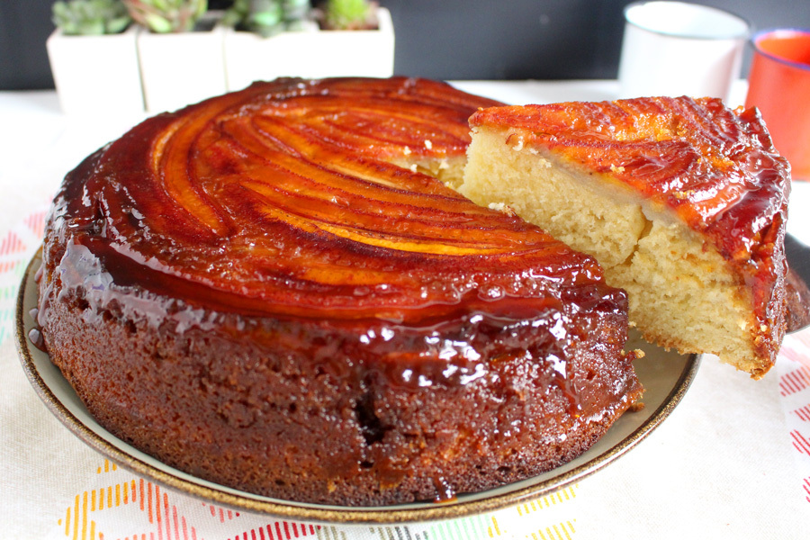

Essa receita de bolo de banana com calda vai te surpreender de tão rápida! O resultado é muito parecido com
bolos vendidos nas melhores padarias por conta da calda
de caramelo que o diferencia do bolo caseiro. Preparado para babar? Então já chama a
família toda que essa receita rende 12 porções!

Ingredientes
Calda
1 xícara de açúcar
4 a 5 bananas
Massa
3 colheres (sopa) de margarina
3 ovos
1 pitada de sal
1 e 1/2 xícara de açúcar
2 xícaras de farinha de trigo
1 xícara de leite
1 colher (sopa) rasa de fermento
Modo de preparo
Calda:
Leve o açúcar ao fogo numa forma até que derreta por completo, formando um caramelo.
Adicione à calda bananas fatiadas.
Massa:
Comece batendo as claras em neve na batedeira ou a mão. Reserve.
Separadamente, bata o açúcar, a margarina e os ovos com um garfo, fouet ou batedeira em potência leve.
Adicione o leite, o sal, o fermento e a farinha.
Acrescente as claras em neve sem parar de bater.
Finalizada essa etapa, despeje a massa na forma previamente caramelizada e leve ao forno a 180° C por 30
minutos.